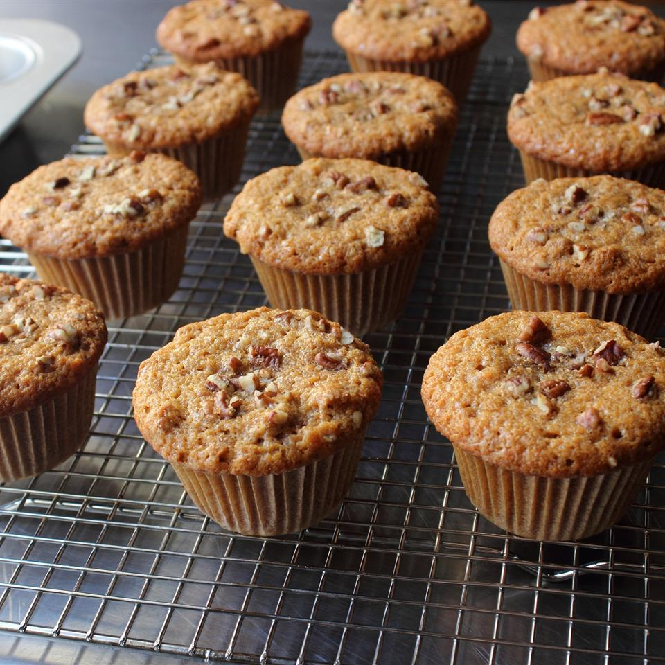

Sweet Potato Muffins

Description
Instead of sweet potato pie (which I'm not that fond of), I made sweet potato muffins and I was thrilled with the results. Muffin or cupcake? Frosted or unfrosted? Doesn't matter--these really are fantastic.
Ingredients
- non-stick cooking spray
- 2 cups all-purpose flour
- 2 teaspoons baking powder
- 2 teaspoons cinnamon
- 1 teaspoon kosher salt
- 1 teaspoon baking soda
- ½ teaspoon ground ginger
- 1 pinch freshly grated nutmeg
- 4 large eggs
- 1 ½ cups white sugar
- ½ cup light brown sugar
- 1 cup vegetable oil
- ¼ cup melted butter
- 2 cups mashed sweet potato (yams)
- 1 cup chopped pecans, plus more for topping
- 2 teaspoons demerara sugar for topping
Steps
- Preheat oven to 350 degrees F (175 degrees C). Line muffins tins with paper muffin liners. Spray with non-stick cooking spray.
- Whisk flour, baking powder, cinnamon, salt, baking soda, ground ginger, and nutmeg together in a mixing bowl.
- In a separate bowl, whisk eggs, white sugar, and brown sugar together until mixture gets light and foamy, about 2 minutes. Pour in vegetable oil and melted butter; whisk together thoroughly. Add mashed sweet potatoes and chopped pecans. Add dry ingredients. Whisk together until dry ingredients disappear into the batter, about 1 minutes. Let batter set for 10 minutes before filling muffin cups.
- Fill muffin cups about 3/4 of the way to the top. Sprinkle tops with pecans and a pinch of demerara sugar.
- Bake until a bamboo skewer inserted in the center of a muffin comes out clean, about 25 minutes. Let cool in pan about 10 minutes; transfer muffins to a cooling rack to cool completely.
Source: https://www.allrecipes.com/recipe/245442/chef-johns-sweet-potato-muffins/